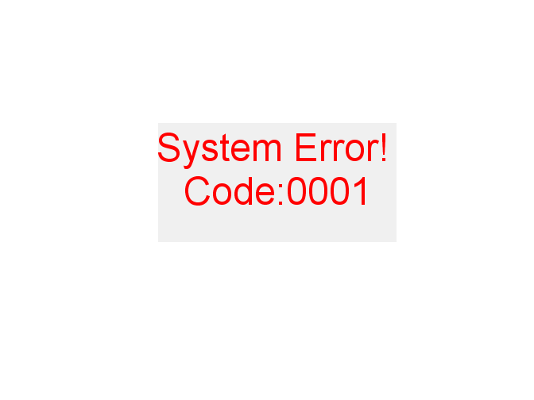

function varargout = NailDosimetry5x1(varargin)
hObject = figure(1);
handles.figure1 = gcf;
handles.currentSpectra = struct('spectra',[],'spectraInformation',[],'fileName',[],'fileDir',[],'color',[]);
handles.spectraBaseline = [];
handles.numSpectraPoints = [];
handles.numFitPoints = [];
handles.search_start = [];
handles.search_stop = [];
handles.subtract = false;
handles.average = false;
handles.multiPlot = false;
handles.currentDoses = 0;
handles.basisSpectra = [];
handles.savedSpectra = struct('spectra',[],'spectraInformation',[],'fileName',[],'fileDir',[],'color',[]);
handles.smoothFit = false;
handles.timesSmoothBeforeFit = 0;
handles.correctOffset = false;
handles.subtractBackground = 'false';
handles.totalMass = 0;
handles.fieldCenter = [];
handles.fieldWidth = [];
handles.plotFit = false;
handles.normalize = false;
handles.baselineStart = [];
handles.baselineStop = [];
handles.smoothType = 'boxcar';
handles.smoothSpan = [];
handles.viewSavedSpectra = false;
handles.plot3 = false;
handles.listSpectra = struct('name',[],'color',[]);
handles.folderList = [];
guidata(hObject, handles);
initialize_gui(hObject, handles, false);
function varargout = NailDosimetry5x1_OutputFcn(hObject, eventdata, handles)
varargout{1} = handles.output;
function initialize_gui(fig_handle, handles, isreset)
if isfield(handles, 'metricdata') && ~isreset
return;
end
clf;
mTextBox = uicontrol('style','text');
set(mTextBox,'String','System Error! Code:0001','FontSize',30,'ForegroundColor','red');
set(mTextBox,'Position',[200,200,300,150]);
guidata(handles.figure1, handles);
function fit_start_edit_Callback(hObject, eventdata, handles)
value = str2double(get(hObject,'String'));
if ~isa(value,'numeric') || isnan(value)
error('Fit stop point must be a number!');
else
handles.fitStart = value;
guidata(hObject,handles);
end
function fit_start_edit_CreateFcn(hObject, eventdata, handles)
if ispc && isequal(get(hObject,'BackgroundColor'), get(0,'defaultUicontrolBackgroundColor'))
set(hObject,'BackgroundColor','white');
end
function search_stop_edit_Callback(hObject, eventdata, handles)
value = str2double(get(hObject,'String'));
if ~isa(value,'numeric') || isnan(value)
error('Fit stop point must be a number!');
else
handles.search_stop = value;
guidata(hObject,handles);
end
function search_stop_edit_CreateFcn(hObject, eventdata, handles)
if ispc && isequal(get(hObject,'BackgroundColor'), get(0,'defaultUicontrolBackgroundColor'))
set(hObject,'BackgroundColor','white');
end
function pos_down_field_edit_Callback(hObject, eventdata, handles)
value = str2double(get(hObject,'String'));
if ~isa(value,'numeric') || isnan(value)
error('Position down field must be a number!');
else
handles.posDown = value;
guidata(hObject,handles);
end
function pos_down_field_edit_CreateFcn(hObject, eventdata, handles)
if ispc && isequal(get(hObject,'BackgroundColor'), get(0,'defaultUicontrolBackgroundColor'))
set(hObject,'BackgroundColor','white');
end
function file_type_popupmenu_Callback(hObject, eventdata, handles)
function file_type_popupmenu_CreateFcn(hObject, eventdata, handles)
if ispc && isequal(get(hObject,'BackgroundColor'), get(0,'defaultUicontrolBackgroundColor'))
set(hObject,'BackgroundColor','white');
end
function smooth_button_Callback(hObject, eventdata, handles)
cla;
if ~isfield(handles.currentSpectra(1),'spectra')
error('No spectra selected!');
end
if strcmpi(handles.smoothType,'lowess')
smoothType = 'lowess';
elseif strcmpi(handles.smoothType,'boxcar')
smoothType = 'moving';
else
error('You must choose an appropriate smooth type!');
end
if isempty(handles.smoothSpan)
error('You must choose a smoothing window value!');
end
for i = 1:length(handles.currentSpectra)
spectraY = handles.currentSpectra(i).spectra(:,2);
smoothY = SmoothCorrect(spectraY,handles.smoothSpan,smoothType);
spectra(:,2) = smoothY;
spectra(:,1) = [1:length(spectra(:,2))];
handles.currentSpectra(i).spectra = [spectra(:,1),spectra(:,2)];
line(1:length(handles.currentSpectra(i).spectra(:,2)),handles.currentSpectra(i).spectra(:,2),'color',handles.currentSpectra(i).color);
hold on
end
if isfield(handles,'lineLeftClick')
handles = rmfield(handles, 'lineLeftClick');
end
if isfield(handles,'lineRightClick')
handles = rmfield(handles, 'lineRightClick');
end
guidata(handles.figure1,handles);
function line_fit_button_Callback(hObject, eventdata, handles)
evalString = 'line_fit_gui(handles)';
subgui_handle = eval(evalString);
subgui_data_handle = guidata(subgui_handle);
guidata(subgui_handle,subgui_data_handle);
function load_folder_button_Callback(hObject, eventdata, handles)
handles.viewSavedSpectra = false;
handles.folderName = uigetdir('','Choose Folder to Load Files');
cd(handles.folderName);
folderList = ls;
folderList(1:2,:) = [];
handles.folderList = folderList;
guidata(hObject,handles);
initialDir = pwd;
LoadListbox(initialDir,handles,hObject);
function LoadListbox(dirPath, handles, hObject)
cd(dirPath)
dirStruct = dir(dirPath);
[sortedNames,sortedIndex] = sortrows({dirStruct.name}');
sortedNames(1:2,:) = [];
sortedIndex(1:2,:) = [];
fullNames = strcat(dirPath,'\',sortedNames);
handles.dirPath = strcat(dirPath,'\');
handles.fileNames = sortedNames;
handles.isDir = [dirStruct.isdir];
handles.sortedIndex = sortedIndex;
handles.text1 = '';
set(handles.listbox1,'String',handles.fileNames,'Value',1);
set(handles.text1,'String',pwd);
guidata(handles.figure1,handles);
contents = cellstr(get(handles.listbox1,'String'));
hex = dec2hex([ 0 0 1], 7);
hexColor = hex(1);
for i = 1:numel(contents)
newText = contents{i};
rgb = floor(rand(1,3) * 255);
color8hex = sprintf('#%02X%02X%02X',rgb);
colors{i} = color8hex;
newColor = sprintf('<HTML><font color="%s">%s</font></HTML>',color8hex,newText);
namestr{i} = newColor;
end
for j = 1:numel(handles.fileNames)
handles.listSpectra(j).name = fullNames{j};
handles.listSpectra(j).color = colors{j};
end
set(handles.listbox1, 'String', namestr);
guidata(hObject,handles);
function FilterList(handles,chosenExt,hObject)
fileNamesNew = handles.listSpectra;
j=1;
for i = 1:numel(fileNamesNew)
if strcmpi(chosenExt,'all')
namestr{i} = handles.folderList(i,:);
else
[pathstr, name, ext] = fileparts(fileNamesNew(i).name);
if (strcmpi(ext,chosenExt))
fileNamesOut{j} = strcat(name,chosenExt);
listSpectraNew(j).name = fileNamesNew(i).name;
listSpectraNew(j).color = handles.listSpectra(j).color;
newText = fileNamesOut{j};
color8hex = listSpectraNew(j).color;
newColor = sprintf('<HTML><font color="%s">%s</font></HTML>',color8hex,newText);
namestr{j} = newColor;
j=j+1;
end
end
end
if ~exist('fileNamesOut','var')
namestr = '';
end
handles.listSpectra = listSpectraNew;
set(handles.listbox1,'String',namestr);
guidata(hObject,handles);
function [fileName fileDir data information] = GetData(path,type,handles)
[partPath,partName,partExt] = fileparts(path);
if ~strcmpi(partExt,type)
error('The Extensions do not Match!');
end
fileName = strcat(partName,partExt);
type = lower(type);
switch type
case '.fls'
spectrum = CenterraReadFLS(path,1);
cd(partPath);
fileDir = partPath;
cellArray1 = spectrum.pars(:,1);
for i=1:11
informationNow{i} = strjoin([spectrum.pars(i,1),spectrum.pars(i,2)]);
end
information.parameters = informationNow';
information.comment = spectrum.comment;
data = spectrum.data;
case '.par'
[x,data,pars,fileName] = eprload(path);
fieldNames = fieldnames(pars);
fieldNames = fieldNames(:);
for i=1:length(fieldNames)
value = getfield(pars,strrep(mat2str(cell2mat(fieldNames(i))),'''',''));
if isa(value,'numeric')
value = num2str(value);
end
informationNow{i} = strjoin([fieldNames(i),value]);
end
information.parameters = informationNow';
information.comment = 'None';
cd(partPath);
fileDir = partPath;
case '.spc'
[x,data,pars,fileName] = eprload(path);
fieldNames = fieldnames(pars);
fieldNames = fieldNames(:);
for i=1:length(fieldNames)
value = getfield(pars,strrep(mat2str(cell2mat(fieldNames(i))),'''',''));
if isa(value,'numeric')
value = num2str(value);
end
informationNow{i} = strjoin([fieldNames(i),value]);
end
information.parameters = informationNow';
information.comment = 'None';
cd(partPath);
fileDir = partPath;
case '.xlsx'
[data,xtxt,xraw] = xlsread(path);
information.parameters = xtxt;
information.comment = 'None';
cd(partPath);
fileDir = partPath;
case '.csv'
data = csvread(path);
cd(partPath);
fileDir = partPath;
information.parameters = 'None';
information.comment = 'None';
end
function listbox1_Callback(hObject, eventdata, handles)
values = get(hObject,'String');
index = get(hObject,'Value');
if ~isfield(handles,'dirPath')
error('No directory path has been selected!');
end
if isempty(values)
set(hObject,'Value',1);
eror('No files present!');
end
viewSavedSpectra = handles.viewSavedSpectra;
if viewSavedSpectra == true
path = strcat(handles.spectraStruct.path(index),'\',values(index));
else
path = handles.listSpectra(index).name;
end
[partPath,partName,partExt] = fileparts(path);
selectedName = strcat(partName,partExt);
szArrayAllowedExt = {'all','.fls','.par','.spc','.xlsx','.csv'};
for i=1:length(szArrayAllowedExt)
found = false;
if strcmpi(partExt,szArrayAllowedExt{i})
if ~isempty(handles.currentSpectra(1).fileName)
for nameIndex = 1:numel(handles.currentSpectra)
[currentPath,currentName,currentExt] = fileparts(handles.currentSpectra(nameIndex).fileName);
compareName = strcat(currentName,currentExt);
if strcmpi(selectedName,compareName)
return
end
end
end
currentColorHex = handles.listSpectra(index).color;
currentColorHex = regexprep(currentColorHex,'#','');
dec1 = hex2dec(currentColorHex(1:2))/255;
dec2 = hex2dec(currentColorHex(3:4))/255;
dec3 = hex2dec(currentColorHex(5:6))/255;
currentColor = [dec1 dec2 dec3];
if handles.subtract==true
if ~isfield(handles,'spectra')
handles.subtract=false;
guidata(hObject,handles)
error('You must choose a spectra before subtracting!');
end
if viewSavedSpectra == true
subSpectra(:,2) = handles.spectraStruct.data(index);
subSpectra(:,1) = [1:length(subSpectra(:,2))];
else
[subfileName subfileDir subSpectra(:,2) handles.spectraInformation] = GetData(path,partExt,handles);
subSpectra(:,1) = [1:length(subSPectra(:,2))];
end
if handles.average == true
subSpectra(:,2) = mean(subSpectra,2);
subSpectra(:,1) = [1:length(subSpectra(:,2))];
end
if ~all(size(handles.spectra)==size(subSpectra))
handles.subtract=false;
guidata(hObject,handles);
error('Spectra must be same dimensions to subtract!');
else
subSpectra = handles.spectra-subSpectra;
handles.subtract=false;
guidata(hObject,handles)
end
else
if viewSavedSpectra == true
subSpectra(:,2) = handles.spectraStruct.spectra(:,index);
subSPectra(:,1) = [1:length(subSpectra(:,2))];
handles.currentSpectra.spectra = [subSpectra(:,1),subSpectra(:,2)];
else
[fileName, fileDir, spectraData, spectraInformation] = GetData(path,partExt,handles);
subSpectra(:,2) = spectraData;
subSpectra(:,1) = [1:length(subSpectra(:,2))];
if handles.multiPlot == true
if isempty(handles.currentSpectra(1).spectra)
handles.currentSpectra(1).fileName = fileName;
handles.currentSpectra(1).fileDir = fileDir;
handles.currentStructure(1).spectraInformation = spectraInformation;
handles.currentSpectra(1).spectra = subSpectra;
handles.currentSpectra(1).color = currentColor;
guidata(hObject,handles);
else
structSize = numel(handles.currentSpectra);
handles.currentSpectra(structSize+1).fileName = fileName;
handles.currentSpectra(structSize+1).fileDir = fileDir;
handles.currentStructure(structSize+1).spectraInformation = spectraInformation;
handles.currentSpectra(structSize+1).spectra = subSpectra;
handles.currentSpectra(structSize+1).color = currentColor;
guidata(hObject,handles);
end
else
handles.currentSpectra = struct('spectra',[],'spectraInformation',[],'fileName',[],'fileDir',[]);
handles.currentSpectra(1).fileName = fileName;
handles.currentSpectra(1).fileDir = fileDir;
handles.currentSpectra(1).spectraInformation = spectraInformation;
handles.currentSpectra(1).spectra = subSpectra;
handles.currentSpectra(1).color = currentColor;
guidata(hObject,handles);
end
end
end
if handles.average == true
handles.spectra = mean(handles.spectra,2);
end
if viewSavedSpectra == true
handles.plotNow = line(subSpectra(:,1),subSpectra(:,2),'color',currentColor);
else
if handles.multiPlot == true
if length(handles.currentSpectra)==1;
handles.plotNow = line(handles.currentSpectra(1).spectra(:,1),handles.currentSpectra(1).spectra(:,2),'color',handles.currentSpectra(1).color);
else
z = 0;
for z = 1:numel(handles.currentSpectra)
handles.plotNow = line(handles.currentSpectra(z).spectra(:,1),handles.currentSpectra(z).spectra(:,2),'color',handles.currentSpectra(z).color);
hold on
end
end
else
cla;
handles.plotNow = line(handles.currentSpectra(1).spectra(:,1),handles.currentSpectra(1).spectra(:,2),'color',currentColor);
end
end
guidata(hObject,handles);
found = true;
break
end
end
if found==false
error('You must choose an appropriate file type!');
end
if isfield(handles,'lineLeftClick')
handles = rmfield(handles, 'lineLeftClick');
end
if isfield(handles,'lineRightClick')
handles = rmfield(handles, 'lineRightClick');
end
guidata(hObject,handles);
function listbox1_CreateFcn(hObject, eventdata, handles)
if ispc && isequal(get(hObject,'BackgroundColor'), get(0,'defaultUicontrolBackgroundColor'))
set(hObject,'BackgroundColor','white');
end
function search_start_edit_Callback(hObject, eventdata, handles)
value = str2double(get(hObject,'String'));
if ~isa(value,'numeric') || isnan(value)
error('Position up field must be a number!');
else;
handles.search_start = value;
guidata(hObject,handles);
end
function search_start_edit_CreateFcn(hObject, eventdata, handles)
if ispc && isequal(get(hObject,'BackgroundColor'), get(0,'defaultUicontrolBackgroundColor'))
set(hObject,'BackgroundColor','white');
end
function pos_up_field_edit_Callback(hObject, eventdata, handles)
value = str2double(get(hObject,'String'))
if ~isa(value,'numeric') || isnan(value)
error('Position up field must be a number!');
else
handles.posUp = value;
guidata(hObject,handles);
end
function pos_up_field_edit_CreateFcn(hObject, eventdata, handles)
if ispc && isequal(get(hObject,'BackgroundColor'), get(0,'defaultUicontrolBackgroundColor'))
set(hObject,'BackgroundColor','white');
end
function subtract_spectra_button_Callback(hObject, eventdata, handles)
if ~isfield(handles,'spectra')||isempty(handles.spectra)
error('Much choose spectra from which to subtract!');
handles.subtract = false;
else
handles.subtract = true;
end
guidata(hObject,handles);
function add_spectra_button_Callback(hObject, eventdata, handles)
stringCurrent = get(handles.listbox1,'String');
lengthStruct = length(handles.savedSpectra);
if lengthStruct == 1 && isempty(handles.savedSpectra.spectra)
handles.savedSpectra(1).fileName = handles.currentSpectra.fileName;
handles.savedSpectra(1).filePath = handles.currentSpectra.fileDir;
handles.savedSpectra(1).spectra = handles.currentSpectra.spectra;
handles.savedSpectra(1).color = handles.currentSpectra.color;
else
for i=1:length(handles.listSpectra)
name = handles.savedSpectra(i).fileName;
if strcmpi(name,handles.listSpectra(i).name)==1
error('Spectra cannot have the same names!');
end
end
handles.savedSpectra(lengthStruct+1).fileName = handles.fileName;
handles.savedSpectra(lengthStruct+1).fileDir = handles.fileDir;
handles.savedSpectra(lengthStruct+1).spectra = handles.spectra;
end
guidata(hObject,handles);
function average_spectra_check_box_Callback(hObject, eventdata, handles)
handles.average=get(hObject,'Value');
guidata(hObject,handles);
function plot_together_check_box_Callback(hObject, eventdata, handles)
handles.multiPlot=get(hObject,'Value');
guidata(hObject,handles);
function clear_spectra_button_Callback(hObject, eventdata, handles)
handles.spectraStruct = struct('name',[],'path',[],'spectra',[]);
handles.spectra = [];
handles.spectraBaseline = [];
handles.spectraTrun = [];
handles.spectraInformation = [];
handles.numSpectraPoints = [];
handles.subtract = false;
handles.fileName = [];
handles.fileDir = [];
handles.correctOffset = false;
handles.subtractBackground = 'false';
if handles.viewSavedSpectra == true
set(handles.listbox1,'String','');
end
handles.viewSavedSpectra = false;
guidata(hObject,handles);
function open_figure_button_Callback(hObject, eventdata, handles)
handles.figure2 = figure(2);
clf
copyobj(handles.axes1,handles.figure2);
function filter_files_button_Callback(hObject, eventdata, handles)
extNum = get(handles.file_type_popupmenu,'Value');
extList = get(handles.file_type_popupmenu,'String');
ext = extList{extNum};
FilterList(handles,ext,hObject);
function number_points_fit_edit_Callback(hObject, eventdata, handles)
value = str2double(get(hObject,'String'));
if ~isa(value,'numeric') || isnan(value)
error('Number fit points must be a number!');
else
handles.numFitPoints = value;
guidata(hObject,handles);
end
function number_points_fit_edit_CreateFcn(hObject, eventdata, handles)
if ispc && isequal(get(hObject,'BackgroundColor'), get(0,'defaultUicontrolBackgroundColor'))
set(hObject,'BackgroundColor','white');
end
function fit_type_popupmenu_Callback(hObject, eventdata, handles)
fitTypeContent = cellstr(get(hObject,'String'));
handles.fitType = fitTypeContent{get(hObject,'Value')};
guidata(hObject,handles);
function fit_type_popupmenu_CreateFcn(hObject, eventdata, handles)
if ispc && isequal(get(hObject,'BackgroundColor'), get(0,'defaultUicontrolBackgroundColor'))
set(hObject,'BackgroundColor','white');
end
function basis_spectra_button_Callback(hObject, eventdata, handles)
[fileName,pathName] = uigetfile('','Choose basis spectra file');
nameString = strcat(pathName,fileName);
[pathstr,name,ext] = fileparts(nameString);
if strcmpi(ext,'.xlsx')
[num,txt,raw] = xlsread(nameString);
basisSpectra.names = txt;
basisSpectra.data = num;
else
error('Basis spetcra file must be an excel ''.xlsx'' file!');
end
handles.basisSpectra = basisSpectra;
set(handles.basis_spectra_edit,'String',nameString);
guidata(hObject,handles);
function plot_fitting_checkbox_Callback(hObject, eventdata, handles)
handles.plotFit = get(hObject,'Value');
guidata(hObject,handles);
function edit_output_Callback(hObject, eventdata, handles)
function edit_output_CreateFcn(hObject, eventdata, handles)
if ispc && isequal(get(hObject,'BackgroundColor'), get(0,'defaultUicontrolBackgroundColor'))
set(hObject,'BackgroundColor','white');
end
function search_end_edit_Callback(hObject, eventdata, handles)
value = str2double(get(hObject,'String'));
if ~isa(value,'numeric') || isnan(value)
error('Standard end must be a number!');
else
handles.stdEnd = value;
guidata(hObject,handles);
end
function search_end_edit_CreateFcn(hObject, eventdata, handles)
if ispc && isequal(get(hObject,'BackgroundColor'), get(0,'defaultUicontrolBackgroundColor'))
set(hObject,'BackgroundColor','white');
end
function list_spectra_button_Callback(hObject, eventdata, handles)
if isempty(handles.spectraStruct)
error('No spectra have been added!');
else
set(handles.edit_output,'String',[handles.folderList],'Foreground',[0 0 1]);
end
function basis_spectra_edit_Callback(hObject, eventdata, handles)
function basis_spectra_edit_CreateFcn(hObject, eventdata, handles)
if ispc && isequal(get(hObject,'BackgroundColor'), get(0,'defaultUicontrolBackgroundColor'))
set(hObject,'BackgroundColor','white');
end
function edit_doses_KeyPressFcn(hObject, eventdata, handles)
function load_info_button_Callback(hObject, eventdata, handles)
set(handles.edit_output,'ForegroundColor','black');
for i = 1:numel(handles.currentSpectra)
set(handles.edit_output,'String',['SPECTRA NAME:';handles.currentSpectra(i).fileName;...
'SPECTRA INFORMATION:';handles.currentSpectra(i).spectraInformation.parameters;char(10);...
'SPECTRA COMMENTS';handles.currentSpectra(i).spectraInformation.comment]);
end
guidata(hObject,handles);
function clear_terminal_button_Callback(hObject, eventdata, handles)
set(handles.edit_output,'String','');
guidata(hObject,handles);
function save_path_button_Callback(hObject, eventdata, handles)
handles.savePath = uigetdir();
set(handles.edit_output,'String',strvcat('Save Path:',handles.savePath));
guidata(hObject,handles);
function truncate_button_Callback(hObject, eventdata, handles)
if(get(handles.use_line_check_box,'Value')==0)
if isempty(handles.search_stop || handles.search_start)
error('Use lines to specify truncation region!');
else
truncateLow = handles.search_start;
truncateHigh = handles.search_end;
end
else
api = iptgetapi(handles.lineLeftClick);
posLeft = api.getPosition();
api = iptgetapi(handles.lineRightClick);
posRight = api.getPosition();
posLeft = posLeft(:,1);
posLeft = posLeft(1);
posRight = posRight(:,1);
posRight = posRight(1);
if posLeft > posRight
posLeftNew = posRight;
posRightNew = posLeft;
truncateLow = posLeftNew;
truncateHigh = posRightNew;
else
truncateLow = posLeft;
truncateHigh = posRight;
end
end
if isempty(handles.currentSpectra(1).spectra)
error('You must choose a spectra and set truncation points!');
elseif truncateHigh-truncateLow + 1 > length(handles.currentSpectra(1).spectra(:,2))
error('Truncation out of range!');
else
cla;
for i = 1:length(handles.currentSpectra)
spectra = handles.currentSpectra(i).spectra;
handles.currentSpectra(i).spectra = zeros(length(spectra(truncateLow:truncateHigh,2)),2);
handles.currentSpectra(i).spectra(:,2) = spectra(truncateLow:truncateHigh,2);
handles.currentSpectra(i).spectra(:,1) = 1:length(handles.currentSpectra(i).spectra(:,2));
line(1:length(handles.currentSpectra(i).spectra(:,1)),handles.currentSpectra(i).spectra(:,2),'color',handles.currentSpectra(i).color);
hold on
end
end
if isfield(handles,'lineLeftClick')
handles = rmfield(handles, 'lineLeftClick');
end
if isfield(handles,'lineRightClick')
handles = rmfield(handles, 'lineRightClick');
end
guidata(hObject,handles)
function normalize_checkbox_Callback(hObject, eventdata, handles)
handles.normalize = get(hObject,'Value');
guidata(hObject,handles);
function baseline_fit_button_Callback(hObject, eventdata, handles)
if ~isfield(handles.currentSpectra,'spectra')
error('You must choose a spectra!');
elseif (get(handles.use_line_check_box,'Value')==0)
if isempty(handles.search_start) || isempty(handles.search_stop)
handles.search_start = 1;
handles.search_stop = length(handles.currentSpectra(1).spectra(:,2));
truncateLow = handles.search_start;
truncateHigh = handles.search_stop;
else
truncateLow = handles.search_start;
truncateHigh = handles.search_stop;
end
else
if ~isfield(handles,'lineLeftClick') || ~isfield(handles,'lineRightClick');
error('You must set marker lines!');
end
api = iptgetapi(handles.lineLeftClick);
posLeft = api.getPosition();
api = iptgetapi(handles.lineRightClick);
posRight = api.getPosition();
posLeft = posLeft(:,1);
posLeft = posLeft(1);
posRight = posRight(:,1);
posRight = posRight(1);
if posLeft > posRight
posLeftNew = posRight;
posRightNew = posLeft;
truncateLow = posLeftNew;
truncateHigh = posRightNew;
else
truncateLow = posLeft;
truncateHigh = posRight;
end
end
truncateHigh = floor(truncateHigh);
truncateLow = ceil(truncateLow);
if isempty(handles.currentSpectra(1).spectra)
error('Error: must choose a spectra and set truncation points!');
elseif truncateHigh-truncateLow + 1 > length(handles.currentSpectra(1).spectra(:,2))
error('Error: truncation our of range!');
else
cla;
for i=1:numel(handles.currentSpectra)
spectraNow = handles.currentSpectra(i).spectra;
spectraY = spectraNow(:,2);
spectraY = spectraY(truncateLow:truncateHigh);
spectraX = 1:length(spectraY);
spectraX = spectraX(:);
array = (truncateLow:1:truncateHigh)';
slope_and_intercept = polyfit(spectraX,spectraY,1);
handles.spectraBaseline = [];
handles.spectraBaseline(:,i) = (array*slope_and_intercept(1))+slope_and_intercept(2);
handles.currentSpectra(i).spectra = [];
handles.currentSpectra(i).spectra(:,2) = spectraY;
handles.currentSpectra(i).spectra(:,1) = spectraX;
line(1:length(handles.spectraBaseline(:,i)),handles.spectraBaseline(:,i),'color','r');
hold on
handles.plotNow = line(spectraX,spectraY,'color',handles.currentSpectra(i).color);
hold on
end
end
if isfield(handles,'lineLeftClick')
handles = rmfield(handles, 'lineLeftClick');
end
if isfield(handles,'lineRightClick')
handles = rmfield(handles, 'lineRightClick');
end
handles.search_stop = [];
handles.search_start = [];
guidata(hObject,handles);
function subtract_baseline_button_Callback(hObject, eventdata, handles)
if ~isfield(handles,'currentSpectra')
error('You must choose a spectra!');
elseif isempty(handles.search_start) || isempty(handles.search_stop)
handles.search_start = 1;
handles.search_stop = length(handles.currentSpectra(1).spectra(:,2));
end
cla;
for i = 1:numel(handles.currentSpectra)
spectra = handles.currentSpectra(i).spectra(:,2);
spectra = spectra - handles.spectraBaseline(:,i);
handles.plotNow = line(1:length(spectra(:)),spectra,'color',handles.currentSpectra(i).color);
hold on
xlswrite('C:\Users\Spencer\Desktop\current_baseline.xlsx',spectra);
handles.currentSpectra(i).spectra(:,2) = spectra;
handles.currentSpectra(i).spectra(:,1) = 1:length(spectra);
end
if isfield(handles,'lineLeftClick')
handles = rmfield(handles, 'lineLeftClick');
end
if isfield(handles,'lineRightClick')
handles = rmfield(handles, 'lineRightClick');
end
guidata(hObject,handles);
function smooth_type_popupmenu_Callback(hObject, eventdata, handles)
contents = cellstr(get(hObject,'String'));
selected = contents{get(hObject,'Value')};
handles.smoothType = selected;
guidata(hObject,handles);
function smooth_type_popupmenu_CreateFcn(hObject, eventdata, handles)
if ispc && isequal(get(hObject,'BackgroundColor'), get(0,'defaultUicontrolBackgroundColor'))
set(hObject,'BackgroundColor','white');
end
function edit_text_span_input_Callback(hObject, eventdata, handles)
handles.smoothSpan = str2double(get(hObject,'String'));
guidata(hObject,handles);
function edit_text_span_input_CreateFcn(hObject, eventdata, handles)
if ispc && isequal(get(hObject,'BackgroundColor'), get(0,'defaultUicontrolBackgroundColor'))
set(hObject,'BackgroundColor','white');
end
function axes1_ButtonDownFcn(hObject, eventdata, handles)
clickType = get(gcbf, 'SelectionType');
xlim = get(gca,'xlim');
ylim = get(gca,'ylim');
cP = get(gca,'Currentpoint');
if (get(handles.amplitude_checkbox,'Value')==1)
y = cP(1,2);
xArray = [xlim(1) xlim(2)];
yArray = [y y];
else
x = cP(1,1);
xArray = [x x];
yArray = [ylim(1) ylim(2)];
end
if strcmpi(clickType,'normal')==1
if isfield(handles,'lineLeftClick')==1
xlim = get(gca,'xlim');
ylim = get(gca,'ylim');
cP = get(gca,'Currentpoint');
y = cP(1,2);
lineHandle = handles.lineLeftClick;
setPosition(lineHandle,xArray,yArray);
guidata(hObject,handles);
else
xlim = get(gca,'xlim');
ylim = get(gca,'ylim');
cP = get(gca,'Currentpoint');
y = cP(1,2);
handles.lineLeftClick = imline(gca,xArray,yArray);
api = iptgetapi(handles.lineLeftClick);
fcn = makeConstrainToRectFcn('imline',get(gca,'XLim'),...
get(gca,'YLim'));
api.setPositionConstraintFcn(fcn);
guidata(hObject,handles);
end
elseif strcmpi(clickType,'alt')==1
if isfield(handles,'lineRightClick')
'handle exists!';
xlim = get(gca,'xlim');
ylim = get(gca,'ylim');
cP = get(gca,'Currentpoint');
y = cP(1,2);
lineHandle = handles.lineRightClick;
setPosition(lineHandle,xArray,yArray);
guidata(hObject,handles);
else
handles.lineRightClick = imline(gca,xArray,yArray);
api = iptgetapi(handles.lineRightClick);
fcn = makeConstrainToRectFcn('imline',get(gca,'XLim'),...
get(gca,'YLim'));
api.setPositionConstraintFcn(fcn);
guidata(hObject,handles);
end
else
error('Error : Mouse click error!');
end
function line_distance_button_Callback(hObject, eventdata, handles)
api = iptgetapi(handles.lineLeftClick);
posLeft = api.getPosition();
api = iptgetapi(handles.lineRightClick);
posRight = api.getPosition();
if (get(handles.amplitude_checkbox,'Value')==1)
posLeft = posLeft(:,2);
posLeft = posLeft(1);
posRight = posRight(:,2);
posRight = posRight(1);
else
posLeft = posLeft(:,1);
posLeft = posLeft(1);
posRight = posRight(:,1);
posRight = posRight(1);
end
distance = abs(posLeft-posRight);
set(handles.line_distance_output_edit,'String',num2str(distance));
guidata(hObject,handles);
function line_distance_output_edit_Callback(hObject, eventdata, handles)
function line_distance_output_edit_CreateFcn(hObject, eventdata, handles)
if ispc && isequal(get(hObject,'BackgroundColor'), get(0,'defaultUicontrolBackgroundColor'))
set(hObject,'BackgroundColor','white');
end
function amplitude_checkbox_Callback(hObject, eventdata, handles)
set(handles.line_width_checkbox,'Value',0);
guidata(hObject,handles);
function fit_button_Callback(hObject, eventdata, handles)
fitType = handles.fitType;
if(get(handles.use_line_check_box,'Value')==0)
stdStart = handles.stdStart;
stdEnd = handles.stdEnd;
fitStart = handles.fitStart;
fitStop = handles.fitStop;
numFitPoints = abs(fitStart-fitStop)+1;
else
api = iptgetapi(handles.lineLeftClick);
posLeft = api.getPosition();
api = iptgetapi(handles.lineRightClick);
posRight = api.getPosition();
posLeft = posLeft(:,1);
posLeft = posLeft(1);
posRight = posRight(:,1);
posRight = posRight(1);
distance = abs(posLeft-posRight);
set(handles.line_distance_output_edit,'String',num2str(distance));
guidata(hObject,handles);
basisSpectra = handles.basisSpectra.data;
stdStart = posLeft;
stdEnd = posRight;
start = posLeft;
stop = posRight;
if start < stop
startCeil = ceil(start);
stopFloor = floor(stop);
elseif start > stop
startCeil = ceil(stop);
stopFloor = floor(start);
else
distanceErrorString = 'Zero distance between lines!';
set(handles.edit_output,'String',distanceErrorString,'ForegroundColor','r');
guidata(hObject,handles);
error(distanceErrorString);
end
lengthBasis = size(basisSpectra,1);
width = abs(startCeil-stopFloor)+1;
difference = abs(width-lengthBasis);
gap = difference/2;
if width < lengthBasis
if mod(gap, 1) == 0
gap1 = gap;
gap2 = gap;
else
gap1 = floor(gap)
gap2 = ceil(gap);
end
basisSpectra = basisSpectra(gap1+1:length(basisSpectra)-gap2);
fitStart = startCeil;
fitStop = stopFloor;
elseif width > lengthBasis
if mod(gap, 1) == 0
gap1 = gap;
gap2 = gap;
else
gap1 = floor(gap);
gap2 = ceil(gap);
end
fitStart = startCeil + gap1;
fitStop = stopFloor - gap2;
else
fitStart = startCeil;
fitStop = stopFloor;
end
numFitPoints = abs(fitStart-fitStop)+1;
end
if (size(basisSpectra,1) ~= numFitPoints)
fitErrorString = 'Error : Number of fit points must equal number of points in chosen basis spectra!';
set(handles.edit_output,'String',fitErrorString,'ForegroundColor','r');
guidata(hObject,handles);
error(fitErrorString);
end
if strcmpi(fitType,'Original')
fitType = 0;
else
fitType = 1;
end
for i =1:numel(handles.currentSpectra)
numSpectraPoints{i} = length(handles.currentSpectra(i).spectra);
normalize = true;
normalizeValue = 1;
data = handles.currentSpectra(i).spectra;
analyze = AnalyzeClass(data,basisSpectra,numSpectraPoints,numFitPoints,fitType,fitStart,fitStop,false,normalizeValue);
analyze.DataFit();
amplitudes(i) = analyze.amplitudes();
fitted(:,i) = basisSpectra.*amplitudes(i);
xValues(:,i) = 1:length(fitted(:,i));
numValues(:,i)=i.*ones(length(fitted(:,i)),1);
end
plot3 = handles.plot3;
if(get(handles.plot_fitting_checkbox,'Value')==1)
if plot3 == true
api1 = iptgetapi(handles.lineLeftClick);
pos1 = api1.getPosition();
api2 = iptgetapi(handles.lineRightClick);
pos2 = api2.getPosition();
cla;
numValues = [1:numel(handles.currentSpectra)];
repNum = repmat(numValues,length(xValues(:,1)),1);
repNum2 = repmat(1,1024,1);
numValues = [1.01,2.01,3.01,4.01,5.01];
repNum = repmat(numValues,length(xValues(:,1)),1);
num = struct('num',[]);
num(1).num = [350:1:350+length(fitted(:,1))-1];
num(2).num = [350:1:350+length(fitted(:,2))-1];
num(3).num = [350:1:350+length(fitted(:,3))-1];
num(4).num = [350:1:350+length(fitted(:,4))-1];
num(5).num = [350:1:350+length(fitted(:,5))-1];
for m = 1:length(handles.currentSpectra)
line(repNum(:,m),num(m).num,fitted(:,m),'color','red');
hold on
line(repmat(m,1024,1),handles.currentSpectra(m).spectra(:,1),handles.currentSpectra(m).spectra(:,2),'color',handles.currentSpectra(m).color)
hold on
end
camlight left; lighting phong
view(26, 42);
else
line(fitStart:fitStop,fitted,'linewidth',2.0,'color','r');
end
end
set(handles.edit_output,'String',['Amplitudes :',' ',num2str(amplitudes)]);
savePath = handles.savePath;
nameWrite = strcat(savePath,'\','results_','nail_dosimetry','.xlsx');
xlswrite(nameWrite,fitted);
guidata(hObject,handles);
function find_center_button_Callback(hObject, eventdata, handles)
spectra = handles.spectra;
if get(handles.use_line_check_box,'Value')==0
posLeft = str2double(get(handles.search_start_edit,'String'));
posRight = str2double(get(handles.search_end_edit,'String'));
else
api1 = iptgetapi(handles.lineLeftClick);
posLeft = api1.getPosition();
api2 = iptgetapi(handles.lineRightClick);
posRight = api2.getPosition();
if posLeft > posRight
posLeftNew = posRight;
posRightNew = posLeft;
posLeft = posLeftNew;
posRight = posRightNew;
end
end
spectraTrun = spectra(posRight:posLeft);
center = AnalyzeClass();
centerPoint = center.GetCenter();
set(handles.edit_output,'String',['Center : ','',num2str(centerPoint)]);
guidata(hObject,handles);
function range_button_Callback(hObject, eventdata, handles)
spectra = handles.spectra;
if get(handles.use_line_check_box,'Value')==0
posLeft = str2double(get(handles.search_start_edit,'String'));
posRight = str2double(get(handles.search_end_edit,'String'));
else
api1 = iptgetapi(handles.lineLeftClick);
posLeft = api1.getPosition();
api2 = iptgetapi(handles.lineRightClick);
posRight = api2.getPosition();
if posLeft > posRight
posLeftNew = posRight;
posRightNew = posLeft;
posLeft = posLeftNew;
posRight = posRightNew;
end
end
rangeNum = range(spectra(posLeft:posRight));
set(handles.edit_output,'String',['Range : ','',num2str(rangeNum)]);
guidata(hObject,handles);
function pushbutton62_Callback(hObject, eventdata, handles)
function line_width_checkbox_Callback(hObject, eventdata, handles)
set(handles.amplitude_checkbox,'Value',0);
guidata(hObject,handles);
function use_line_check_box_Callback(hObject, eventdata, handles)
function handles_button_Callback(hObject, eventdata, handles)
structSize = length(fieldnames(handles));
names = fieldnames(handles);
set(handles.edit_output,'String',names,'ForegroundColor','k');
guidata(hObject,handles);
function plot3d_checkbox_Callback(hObject, eventdata, handles)
handles.plot3 = get(hObject,'Value');
guidata(hObject,handles);
function clear_current_spectra_button_Callback(hObject, eventdata, handles)
handles.currentSpectra = struct('spectra',[],'spectraInformation',[],'fileName',[],'fileDir',[]);
cla;
guidata(hObject,handles);
function delete_spectra_button_Callback(hObject, eventdata, handles)
if isempty(handles.currentSpectra(1).fileName)
error('No spectra have been added!');
end
if handles.viewSavedSpectra == true
else
index = 0;
for index = 1:numel(handles.currentSpectra)
[pathstr,name,ext] = fileparts(handles.currentSpectra(index).fileName);
extName = strcat(name,ext);
index = get(handles.listbox1,'Value');
strings = get(handles.listbox1,'String');
selectedString = strings{index};
[pathstrS,nameS,extS] = fileparts(selectedString);
extSelect = strcat(nameS,extS);
if strcmpi(extSelect,extName)
handles.currentSpectra(index) = [];
allNames = {handles.currentSpectra.fileName};
size = numel(handles.currentSpectra);
set(handles.listbox1,'String',allNames,'Value',size);
guidata(hObject,handles);
break
end
end
cla;
for j = 1:numel(handles.currentSpectra)
line(1:length(handles.currentSpectra(j).spectra(:,2)),handles.currentSpectra(j).spectra(:,2));
end
end
function standard_align_button_Callback(hObject, eventdata, handles)
if ~isfield(handles,'currentSpectra')
error('You must choose a spectra!');
end
if get(handles.use_line_check_box,'Value')==0
posLeft = str2double(get(handles.search_start_edit,'String'));
posRight = str2double(get(handles.search_end_edit,'String'));
else
api1 = iptgetapi(handles.lineLeftClick);
posLeft = api1.getPosition();
api2 = iptgetapi(handles.lineRightClick);
posRight = api2.getPosition();
if posLeft > posRight
posLeftNew = posRight;
posRightNew = posLeft;
posLeft = posLeftNew;
posRight = posRightNew;
end
end
stdStart = ceil(posLeft(1));
stdEnd = floor(posRight(1));
for i=1:numel(handles.currentSpectra)
crossovers(i) = AnalyzeClass.Crossover(handles.currentSpectra(i).spectra(:,2),stdStart,stdEnd);
rgb = handles.currentSpectra(i).color;
color8hex = sprintf('#%02X%02X%02X',rgb*255);
output = num2str(crossovers(i));
newText = ['Crossover Points :',' ',output];
newColor = sprintf('<HTML><font color="%s">%s</font></HTML>',color8hex,newText);
namestr{i} = newColor;
end
set(handles.edit_output,'Style','list','String',namestr);
guidata(hObject,handles);
function right_move_button_Callback(hObject, eventdata, handles)
if ~isfield(handles,'spectra')
error('You must choose a spectra!');
end
spectra(:,2) = handles.spectra(:,2);
spectra(:,1) = handles.spectra(:,1);
newX = spectra(:,1)+1;
newX = newX(:);
cla;
line(newX,spectra(:,2));
handles.spectra = [newX,spectra(:,2)];
guidata(hObject,handles);
function left_move_button_Callback(hObject, eventdata, handles)
if ~isfield(handles,'spectra')
error('You must choose a spectra!');
end
spectra(:,2) = handles.spectra(:,2);
spectra(:,1) = handles.spectra(:,1);
newX = spectra(:,1)-1;
newX = newX(:);
cla;
line(newX,spectra(:,2));
handles.spectra = [newX,spectra(:,2)];
guidata(hObject,handles);
function up_move_button_Callback(hObject, eventdata, handles)
if ~isfield(handles,'spectra')
error('You must choose a spectra!');
end
spectra(:,2) = handles.spectra(:,2);
spectra(:,1) = handles.spectra(:,1);
newY = spectra(:,2)+1;
newY = newY(:);
cla;
line(spectra(:,1),newY);
handles.spectra = [spectra(:,1),newY];
guidata(hObject,handles);
function down_move_button_Callback(hObject, eventdata, handles)
if ~isfield(handles,'spectra')
error('You must choose a spectra!');
end
spectra(:,2) = handles.spectra(:,2);
spectra(:,1) = handles.spectra(:,1);
newY = spectra(:,2)-1;
newY = newY(:);
cla;
line(spectra(:,1),newY);
handles.spectra = [spectra(:,1),newY];
guidata(hObject,handles);
function edit58_Callback(hObject, eventdata, handles)
function edit58_CreateFcn(hObject, eventdata, handles)
if ispc && isequal(get(hObject,'BackgroundColor'), get(0,'defaultUicontrolBackgroundColor'))
set(hObject,'BackgroundColor','white');
end
function edit59_Callback(hObject, eventdata, handles)
function edit59_CreateFcn(hObject, eventdata, handles)
if ispc && isequal(get(hObject,'BackgroundColor'), get(0,'defaultUicontrolBackgroundColor'))
set(hObject,'BackgroundColor','white');
end
function edit60_Callback(hObject, eventdata, handles)
function edit60_CreateFcn(hObject, eventdata, handles)
if ispc && isequal(get(hObject,'BackgroundColor'), get(0,'defaultUicontrolBackgroundColor'))
set(hObject,'BackgroundColor','white');
end
